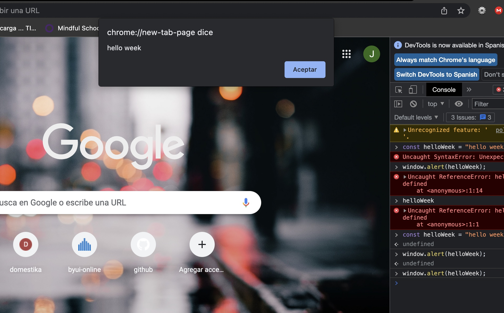
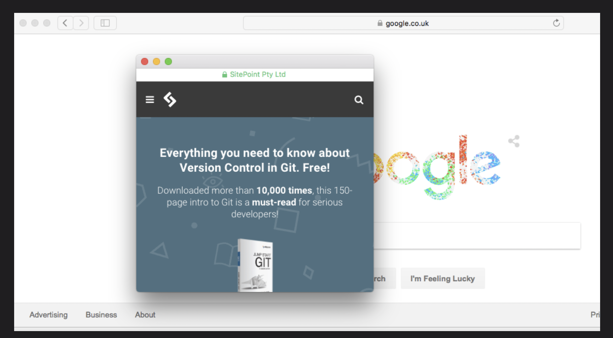

The Window object represents the window in the browser.All browsers support the Window object. Global variables are the properties of the Window objects, and global functions are the methods of the Window object. The window object methods are used to retrieve the information from the browser window.
is a collection of properties and methods that contain information about the browser and computer screen. For example, we can find out which browser is being used to view a page (though, this method is unreliable). We can also find out the dimensions of the screen it is viewed on, and which pages have been visited before the current page.
there functions that produced dialogs in the browsers
controlling window takes the URL of the page to be opened as its first parameter, the window title as its second parameter, and a list of attributes as the third parameter. This can also be assigned to a variable,
API stands for Application Programming Interface. An API is a set of pre-built programs that can be used with the help of JavaScript. APIs are used to implement already written code to fulfill the needs of the project you are working on.